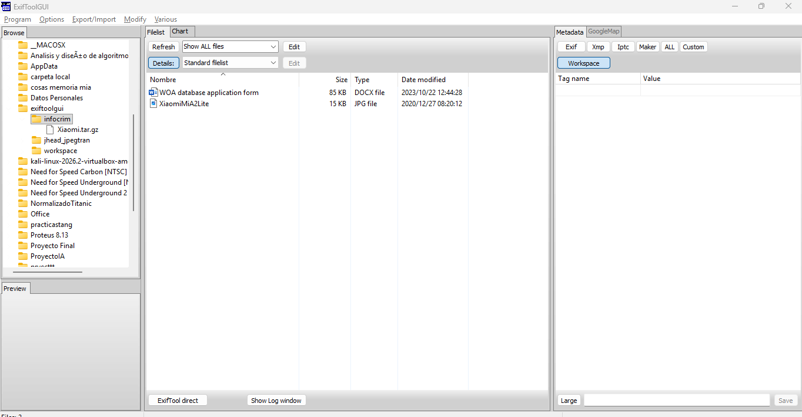
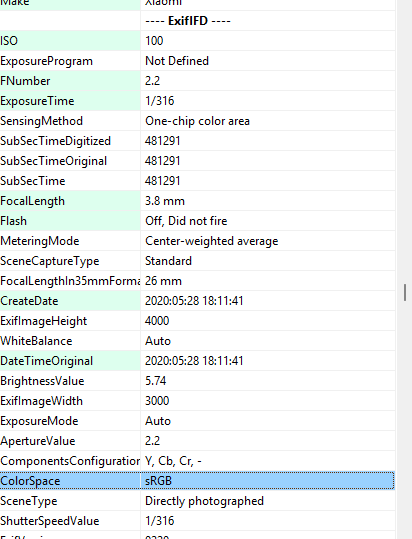
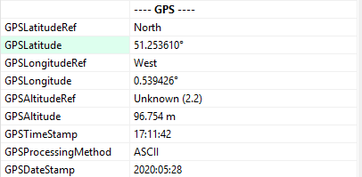
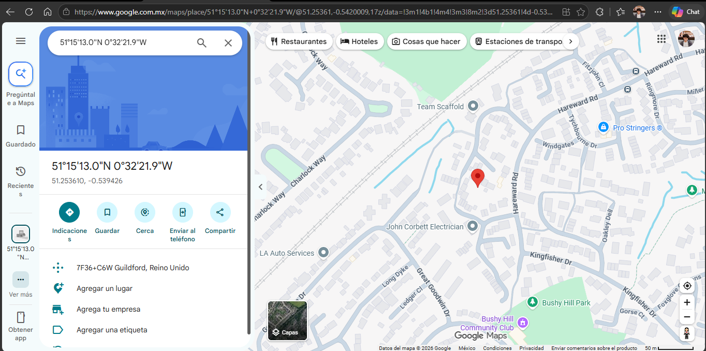
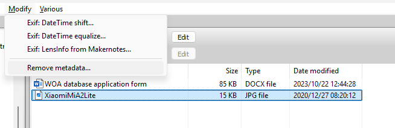
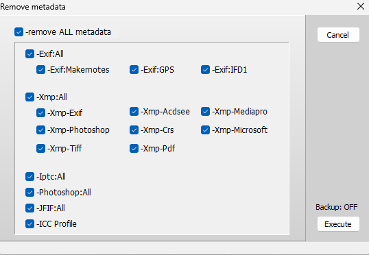
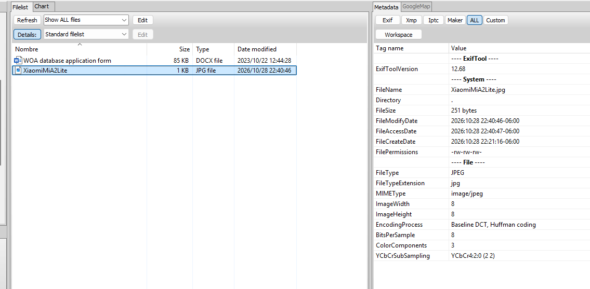

/// ACT11_EXIF_TRACE
> INF_CRIM // ACTIVIDAD_11 // METADATA_GEOLOCATION...
Profesor: Servando Lopez Contreras
Jesús Israel Martínez Escobedo - 175325
La fotografía como testigo: extracción de metadatos GPS para geolocalización
Informática Criminológica
Ingeniería en Tecnologías de la Información
Universidad Politécnica de San Luis Potosí
28 de octubre de 2026
Objetivo
Aplicar técnicas de análisis forense de metadatos con ExifTool sobre dos muestras digitales: un documento de Word elaborado por INTERPOL y una fotografía tomada con un Xiaomi Mi A2 Lite. El fin es identificar autoría, fechas, parámetros de captura y, sobre todo, la ubicación GPS exacta donde se tomó la imagen.
La actividad muestra cómo un archivo aparentemente inofensivo funciona como testigo digital: guarda información sobre quién lo creó, cuándo, con qué equipo y desde dónde. Al final se eliminan todos los metadatos de la muestra para comprobar la técnica contraria (sanitización / anti-forense).
Muestra 1: WOA database application form.docx — formulario de INTERPOL (85 KB)
Muestra 2: XiaomiMiA2Lite.jpg — fotografía con datos EXIF y GPS (15 KB)
Herramienta: ExifToolGUI v5 + ExifTool (Phil Harvey)
Verificación externa: Google Maps (coordenadas GPS)
Sistema: Windows
Metodología
El análisis se hizo en cuatro fases, de la carga de las muestras a la eliminación de los metadatos:
- Carpeta infocrim
- Carga en ExifToolGUI
- Vista ALL
- Autor y empresa
- Plantilla y categoría
- Fechas y tiempo de edición
- EXIF: ISO, focal, flash
- Coordenadas GPS
- Ubicación en Google Maps
- Modify → Remove metadata
- -remove ALL metadata
- Verificación final
Resultados
Parte I // WOA database application form.docx
Metadatos del documento de Office elaborado por INTERPOL (propiedades core, app y custom).
Categoría asignada por INTERPOL
No clasificado. Además, el campo Category del documento dice "English".
Plantilla utilizada
Plantilla institucional de Word con la que se elaboró el formulario.
Tiempo total de edición
Tiempo acumulado con el documento abierto en edición, en 6 revisiones.
Compañía propietaria
Organización Internacional de Policía Criminal.
Última modificación
Última modificación el 03/05/2019 a las 16:22:00 UTC.
Fecha de creación
Valor original: 2019-05-03T15:35:00Z.
Creador del fichero
Creado con Microsoft Office Word 15.0 (Office 2013).
Parte II // XiaomiMiA2Lite.jpg
Metadatos EXIF y GPS de la fotografía tomada con un Xiaomi Mi A2 Lite (Android 9).
ISO y apertura
Exposición de 1/316 s con balance de blancos automático.
Longitud focal
Equivale a 26 mm en formato de 35 mm (cámara trasera).
Uso de flash
Valor: "Off, Did not fire". El flash estaba apagado y no se disparó.
Fecha de creación
El GPS marca 17:11:42 UTC, así que la hora local era UTC+1 (horario de verano británico).
Coordenadas GPS
Decimal: 51.253610, -0.539426. Altitud registrada: 96.754 m.
Lugar exacto
Surrey, Inglaterra. Zona residencial entre Hareward Rd y Charlock Way, cerca de Bushy Hill Park (Plus Code 7F36+C6W).
Eliminación de metadatos
Se borraron EXIF, GPS, IFD1 (miniatura), XMP, IPTC, Photoshop, JFIF e ICC Profile.
La hora local de la cámara (18:11:41) y la hora GPS en UTC (17:11:42) difieren exactamente una hora. Eso concuerda con el horario de verano británico (BST, UTC+1) en mayo, y respalda que la foto se tomó en Reino Unido. Cruzar varios metadatos (fecha, zona horaria y coordenadas) le da más solidez a la geolocalización que fiarse de un solo dato.
Evidencias
Capturas de pantalla tomadas durante el análisis con ExifToolGUI, organizadas por fase.
01 // Carga de las muestras en ExifToolGUI
Se abrió ExifToolGUI y se navegó a la carpeta infocrim, donde aparecen las dos muestras: el documento de INTERPOL y la fotografía del Xiaomi Mi A2 Lite.

02 // Metadatos EXIF de la fotografía
Sección ExifIFD de la imagen: ISO 100, FNumber 2.2, FocalLength 3.8 mm, Flash: Off, Did not fire y fecha original 2020:05:28 18:11:41.

03 // Coordenadas GPS embebidas
Sección GPS: latitud 51.253610° N, longitud 0.539426° W, altitud 96.754 m y marca de tiempo 2020:05:28 17:11:42 UTC.

04 // Geolocalización en Google Maps
Las coordenadas se pusieron en Google Maps. El punto cae en la zona residencial de Bushy Hill, Guildford (Surrey, Reino Unido), entre Hareward Rd y Charlock Way, cerca de Bushy Hill Park.

05 // Menú Modify → Remove metadata
Con la fotografía seleccionada se abrió la opción Remove metadata del menú Modify.

06 // Selección de todas las categorías
Se marcó -remove ALL metadata, que incluye Exif (Makernotes, GPS, IFD1), XMP, IPTC, Photoshop, JFIF e ICC Profile, y se ejecutó con Execute.

07 // Verificación final
Al volver a analizar la imagen ya no aparecen las secciones EXIF, GPS ni la miniatura. Solo quedan los datos que ExifTool calcula del propio archivo (tamaño, tipo y dimensiones), y el archivo bajó de 15 KB a 251 bytes.

Entregables
Documento de la actividad.
Conclusión
La actividad demostró que los metadatos son una fuente de evidencia muy valiosa en la investigación criminal. Del documento de INTERPOL se obtuvieron la autora, la organización propietaria, la plantilla, la clasificación y las fechas exactas de creación y modificación, todo sin abrir su contenido.
En la fotografía, los datos EXIF revelaron el modelo del teléfono, los parámetros de captura y las coordenadas GPS que ubican la toma en Guildford, Reino Unido, el 28 de mayo de 2020. Así una imagen se vuelve "testigo": puede ubicar a una persona en un lugar y un momento concretos.
La eliminación de metadatos mostró también lo fácil que es borrar ese rastro. Por eso, en un contexto forense, hay que preservar el archivo original (cadena de custodia y copia de respaldo) antes de cualquier modificación. Y como usuarios, conviene limpiar los metadatos antes de compartir fotos para proteger la privacidad y la ubicación.